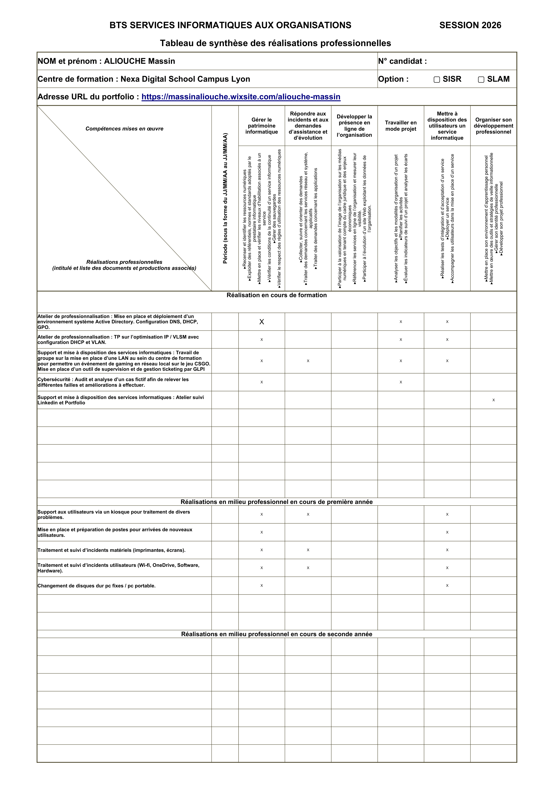

Mes compétences
J'ai acquis des compétences techniques à travers ma formation, mes expériences personnelles et mon alternance. Ces compétences ont été appliquées lors de travaux pratiques et de projets concrets.

Tableau récapitulatif de mes compétences acquises en BTS SIO SISR
Infrastructure
- Proxmox VE
- Active Directory
- Virtualisation
- Windows Server
- GLPI / ITSM
Réseaux & Système
- Configuration réseaux
- Gestion des services
- Administration Linux
- Scripting Bash/PowerShell
- Troubleshooting
Sécurité & Support
- Cybersécurité
- Support utilisateur
- Gestion d'incidents
- Documentation technique
- Veille technologique